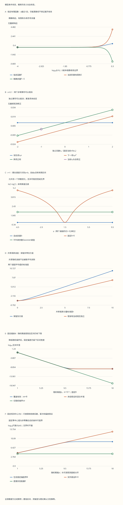

本页目录
了望塔 · 量子引力、新物理与证据的边界
“还没发现”之后，能写下什么结论？这一页把前沿框架接到可检查的推断链：低能展开、实验响应、误差模型、参数区间，最后才讨论理论身份。
前置：有效场论与重整化、测量与不确定度。量子引力地图只要求理解这些工具的用途，不要求已经学过弦论。
完成后应能：自己算一项展开余量，识别参数退化，区分共享高斯误差与有界偏差，并给“排除某种新物理”补上必要的模型条件。本页全部实验数据都是合成算例。
1. 从一句前沿主张拆出六个问题
“某实验检验了量子引力”至少要说明：候选框架是什么，如何得到低能相互作用，哪些参数自由，探测器测哪个量，噪声与偏差怎样描述，最后采用什么统计规则。
| 环节 | 必须交代的内容 | 跳过它容易产生的误读 |
|---|---|---|
| 理论框架 | 动力学、自由度、边界条件 | 一个概念名就等于一个完整模型 |
| 低能映射 | 算符、系数、适用能区 | 所有新物理都遵守同一缩放式 |
| 参数选择 | 固定、联合拟合还是扫描 | 单参数限制可以直接套到任意实现 |
| 实验响应 | 接受度、分辨率、背景 | 理论信号大就一定观测得到 |
| 不确定度 | 随机相关性与未知偏差 | 写一个误差条就完成了推断 |
| 结论 | 灵敏度、置信区间、显著性或后验 | 这些数字回答同一个问题 |
这条链允许在一个局部环节取得真实进展：限制某个系数、改进一个计算方法、排除某段质量与耦合范围，都有价值。它也要求结论停在证据实际到达的位置。
2. 不可重整，为什么仍能计算
在四维自然单位制 \(\hbar=c=1\) 下，拉格朗日密度的质量量纲是4。一个维数 \(d>4\) 的算符可以写为
只计算到指定精度时，按幂计数保留有限阶；同一阶的反项、重整化与系数匹配也要一起处理。未知高能物理可以进入待测系数，低能轻自由度仍能产生可预测的结构。引力也可以这样组织；“不能用有限个参数定义任意高能的微扰基本理论”不意味着“低能量子修正完全算不了”。这一层依据是Donoghue 的引力有效场论说明，第4节。
对某个已声明的无量纲观测修正，可能有 \(\Delta=c_6(E/\Lambda)^2+\cdots\)。这个幂次不能仅由“量子引力”“超对称”之类名称决定；对称性可以禁掉领先项，环因子、矩阵元、运动学和算符混合也会改变具体结果。下面把 \(E\) 与 \(\Lambda\) 的数值单位固定为 GeV。
练习1：维数六算符，是否保证截面偏移一定正比于 E²/Λ²？
不保证。幂计数首先作用于相应的振幅或观测展开。若 \(A=A_0+\delta A\)，则 \(|A|^2-|A_0|^2=2\operatorname{Re}(A_0^*\delta A)+|\delta A|^2\)。 当干涉项因对称性或选择规则消失时，首个可见贡献可能来自平方项；其他同阶算符也可能参与。必须说明正在展开什么量，不能把一个量纲估计当作通用实验公式。
3. 一个知道精确答案的展开实验
为看清“余量”，另外定义一个完整的响应函数，令 \(x=(E/\Lambda)^2\)：
这是本页指定的有理函数模型，可以代表某种归一化后的重媒介响应形状；我们没有从它推出一个量子引力紫外完成。分母和所有高阶系数已经写死，因此能算出精确余量。在 \(0\le x<1\) 时级数收敛；\(c_6\ne0\) 时，相对截断误差恰为 \(x^K\)。在 \(x\ge1\) 时有限和与余量的代数恒等式仍成立，但增加阶数不再保证改善结果。
实验保留有符号余量、绝对余量、直接相减值和相对误差。极小量相减可能损失有效数字，因此以解析余量直接计算微小尾部，同时用独立高精度算术核对。\(c_6=0\) 时函数恒为0，零级数对所有x都收敛；实验另列非平凡几何级数域\(x<1\)，相对误差返回“不适用”，而非把 \(0/0\) 写成0。
练习2：x=0.1 时，保留一阶和四阶分别损失多少？
只要 \(c_6\ne0\)，相对误差分别为 \(10^{-1}\) 与 \(10^{-4}\)。取 \(c_6=1\)，精确响应为 \(1/11\)；一阶近似是0.1，误差为 \(-1/110\)。负号表示近似值偏大。
改成 \(x=10\)，相对误差分别为10和 \(10^4\)。更多项反而更差，尽管计算机仍能给出有限数字。这个收敛域是本函数的性质，不能推广为所有有效场论的统一阈值。
4. 两个算符抵消，不等于两个算符不存在
现在解除前一函数对高阶系数的绑定，另设独立的两项模型 \(\Delta_2=c_6x+c_8x^2\)。它不再是上一节的完整有理函数；本页没有为更高项附加一个凭空的误差上界。
取 \(x=0.1,c_6=0.1,c_8=-1\)，两项各为0.01与 \(-0.01\)，总和为0。一个观测可以沿某个参数方向不敏感，即使各系数不为零。加入不同算符组合、不同能量或不同末态的观测，才可能打破这种退化。
练习3：若 c₆=0，是否就对新物理完全没有灵敏度？
不一定。若 \(c_8\ne0\)，本模型的领先项变成 \(c_8(E/\Lambda)^4\)。原来的二次幂尺度映射已经不适用，但四次幂项仍可贡献信号。反过来，如果所有与该观测相关的耦合都为零，这个观测就不能给出有限的尺度下限。实验把这两个情形分成“零耦合”和“首项消失后看下一阶”。
5. 灵敏度与数据结论之间还隔着一个模型
显示 \(\Delta/\sigma\) 只是在已给定噪声标度下比较信号量级。要报告排除或显著性，还需观测值、采样分布、检验规则、背景和系统误差等信息。预期灵敏度也不同于一次实际数据得到的区间。
以下统计实验使用独立声明的线性高斯模型，不把它冒充真实碰撞实验。两个测量的单通道独立随机误差标准差归一化为1：
\(a,b\) 是两个待测响应参数，\(r\) 控制通道是否互补；它们不自动等于上一节的 Wilson 系数。\(\tau\) 表示随机、零均值、已知方差的共享高斯分量。似然由 \(\chi^2=(y-M\theta)^TC^{-1}(y-M\theta)\) 给出。这里参数可取任意实数，协方差已知；因此下面的高斯区间可以直接推导，不需要假装用渐近定理解决所有边界问题。
6. 多测一次，有时仍然分不开参数
\(r\ne1\) 时，两个均值方程可逆：
当 \(r\) 接近1，参数误差急剧增大。恰好 \(r=1\) 时，两行响应完全相同，实验只识别 \(a+b\)；只要同时补偿 \(b\)，任意 \(a\) 都能给出同样的均值。两个数据拟合两个自由参数时，满秩模型的最小残差为0也不构成拟合优度检验：没有剩余自由度。
程序明确返回秩1与无界的 \(a\) 区间，避免伪造一个巨大但有限的置信区间。
对于给定的 \(a\)，把 \(b\) 调到最有利于数据的值，称为对 \(b\) 做剖面。实验显示整个剖面曲线，并与强行固定 \(b=0\) 的曲线比较。固定参数得到更窄区间可以合理，但那是一项需要公开的模型假设。
练习4：r=1、y₁=y₂=0 时，为什么固定 b=0 会突然得到有限区间？
自由拟合时，\(b=-a\) 对任意 \(a\) 都能复现零均值，所以沿这个方向 \(\Delta\chi^2=0\)。固定 \(b=0\) 后，只剩 \(a\) 一个参数，估计值是 \((y_1+y_2)/2=0\)，方差为 \(1/2+\tau^2\)。95% 双侧区间于是为 \(\pm1.959964\sqrt{1/2+\tau^2}\)。 两份报告数值不同，原因是它们允许的模型集合不同，而不是多了另一组实验数据。
7. 共享误差不会随着取平均一起消失
固定 \(b=0\)，两个通道的平均值为 \(\widehat a=(y_1+y_2)/2\)。利用协方差直接算出
若错把两个共享分量当成独立的，会得到 \((1+\tau^2)/2\)，低估不确定度。一般 \(N\) 次测量若有同样的独立方差1和一个完全共享的随机偏移，平均值方差是 \(1/N+\tau^2\)；只增加重复次数不会消掉后一项。
练习5：τ=5 时，两种算法给出的标准差各是多少？
正确标准差是 \(\sqrt{25.5}\approx5.04975\)，错误的独立假设给出 \(\sqrt{13}\approx3.60555\)。随着共享误差占主导，错误方法多获得了一个实际上不存在的 \(\sqrt2\) 改善。两个通道如果共享同一标定源，必须在协方差或显式标定模型中保留它。
8. “只知道偏差有界”是另一种信息
再考虑一个单测量模型 \(y=\mu+\beta+\epsilon\)，其中 \(\epsilon\sim N(0,\sigma^2)\)，但只知道固定未知偏差满足 \(|\beta|\le B\)，没有给它指定概率分布。
令 \(z=\Phi^{-1}(0.975)\approx1.959964\)。对每个允许的 \(\beta\) 取高斯置信区间，再求并集，得到
区间也等于 \(q(\mu)\le z^2\) 的集合。若真实噪声满足 \(|\epsilon|\le z\sigma\)，不论允许范围内的真实偏差是多少，都有 \(\mu\in I(y)\)，因此覆盖率至少95%。这里覆盖率是重复实验时区间包含固定真值的频率，不是给这次区间内的参数赋予95%后验概率；后者还需要先验。统计术语与两类区间的区别可对照 PDG 2025 Statistics，第40.4节。
练习6：把半宽改成 √[(zσ)²+B²]，也有95%覆盖吗？
没有这样的保证。取真实偏差 \(\beta=B>0\)，当 \(B\gg\sigma\) 时，这个错误半宽只比 \(B\) 大约 \(z^2\sigma^2/(2B)\)。噪声向外的一半情形几乎都会越过边界，覆盖率趋向1/2。实验的“有界偏差”预设取 \(B=2\times10^{-10},\sigma=10^{-12}\)，错误覆盖率约0.5038。
正确的半宽是 \(B+z\sigma\)。若偏差确实有已知高斯分布，方差相加可能是正确做法；关键是那已经换了模型，不能从“有界”两个字推出“高斯”。
9. 条件尺度下限到底约束了什么
为隔离尺度翻译这一步，这个面板固定观测中心值为0，不使用上面可调的 \(y_1,y_2\)。假设唯一响应是 \(\mu=c(E/\Lambda)^n\)，已指定非零 \(c\) 和幂次 \(n\)，由上一节零中心值区间得
实验在\(n=2\)时取\(c=c_6\)，在\(n=4\)时取\(c=c_8\)；这是只留选定单项的映射，仍不是同时保留两算符的拟合。
这个条件界使用双侧95%区间，不是把一个“1σ灵敏度阈值”改个名字。默认 \(E=10^4,c=1,\sigma=10^{-10},B=0,n=2\)，给出约 \(7.14\times10^8\) GeV；改成 \(n=4\) 时约为 \(2.67\times10^6\) GeV。数值差别来自映射假设，不是实验突然获得了不同数据。
为了标示低能展开的边界，表格另外列出 \(\Lambda>E\) 与被排除范围的交集，记录的是开区间\((E,\Lambda_{\min})\)的两个端点：边界\(E\)不属所取适用域，下限处仍被保留。如果算得的下限不高于 \(E\)，就没有得到这个约定域内的排除区间。即使有交集，也还须检查真实理论的截断误差；\(E/\Lambda<1\) 只是必要的尺度提醒，不能独自提供通用精度证书。
练习7：为什么更精确的仪器最终可能不再提高这个尺度界？
如果 \(B\) 固定，当 \(\sigma\to0\) 时，\(U\to B\)，尺度下限趋向 \(E(|c|/B)^{1/n}\)。本实验的精度扫描固定 \(B\)，所以能看到这一平台。应当改进偏差控制或引入独立标定信息，而不只是继续降低随机噪声。
若 \(c=0\)，任何 \(\Lambda\) 都给零响应，程序返回无尺度界。若存在多个未知系数或抵消方向，则应回到联合参数拟合，不能直接沿用这一条单参数不等式。
10. 量子引力地图：每条路线完成了哪一层
引力有效场论提供低能计算工具；紫外完成要求解释更高能的动力学并恢复已经检验的低能物理。Planck 能标约 \(10^{19}\) GeV 是由 \(G,\hbar,c\) 组合出的自然参照，不是一道被实验测定的、所有模型统一失效的硬墙。若存在更低尺度的新自由度，某个有效描述可能更早需要更新。
| 路线 | 可以具体研究什么 | 不能直接越过的结论 |
|---|---|---|
| 弦论与相关对偶 | 指定背景中的弦谱、散射、紧致化与对偶 | 闭弦谱有自旋2态，不自动选出自然界的真空与参数 |
| AdS/CFT | 特定边界场论与渐近AdS引力系统之间的字典及可控极限 | 某个模型的理论检验不证明真实宇宙就是该AdS背景 |
| 圈量子引力 | 几何量子化、约束与动力学、半经典极限 | 运动学面积算符的离散谱不等于已经观测到空间颗粒 |
| 渐近安全 | RG固定点、相关方向、物质耦合与低能轨迹 | 截断中的固定点证据不单独完成Lorentzian理论及经验检验 |
| 因果集、动力学三角剖分等 | 离散结构、连续极限、时空与物质的关系 | 一个离散定义不自动保证恢复所需的连续引力动力学 |
AdS/CFT 的原始工作讨论的是特定超共形理论与相应超引力极限，参见 Maldacena 1997；本页不把整个对偶推广为对任意时空都已证明的定理。圈量子引力的面积算符原始论文明确在运动学 Hilbert 空间构造算符，动力学约束、物理观测与实验对应还需要继续处理。
一个近期可追踪的技术前沿是渐近安全的 Lorentzian 描述。Eichhorn 2026 综述第V.3节讨论了已有的小截断结果及其局限：不能仅凭 Euclidean 计算就把真实时间动力学全部视为已解决。这里的进展可以通过截断稳定性、不同方法的一致性和物质耦合等具体问题推进，而不必先写出“最终理论已成立”的结论。
练习8：几何谱离散，能否直接推出任意观测者都测到同一个最小空间格点？
不能。首先要说明哪个算符、在哪个态空间、是否已处理动力学约束，以及它对应什么测量过程。一个量子算符的离散本征值，也不等于整个时空采用固定坐标网格。坐标选择、物理可观测量与测量统计必须分开。
类似地，奇点定理的标准结论涉及适当假设下的测地线不完备，并非逐点证明所有奇点都具有无穷密度。黑洞信息问题也需交代半经典近似、所取系统和边界条件；不能用一句“量子力学与引力直接矛盾”替代这些条件。更具体的模型可沿黑洞与因果结构、全息量子信息继续学习。
11. 超越标准模型：现象、候选与搜索分别记账
中微子振荡要求原始最小标准模型之外的质量结构，但不单独决定质量起源；暗物质的引力现象与某一种粒子身份也是两层问题。宇宙加速可以在相应宇宙学模型中讨论，真空能的理论困难则是进一步的问题，不能把所有差异压成一个无条件的“相差若干数量级”。相关基础见中微子、星系与暗物质、暴胀与暗能量。
超对称、轴子、额外维度和大统一各有多种实现。新粒子质量、衰变分支、寿命、耦合与宇宙学历史都会影响搜索结论。许多统一模型允许质子衰变，但一个寿命限制首先作用于指定通道与模型参数，不能由此概括所有统一方案。
这里把 PDG 2025 搜索与假想粒子目录作为有版本的阅读入口，不将旧数值伪装成实时限值。阅读某个排除图时，记录版本、碰撞能量或曝光量、置信规则、分支假设和被固定的参数；需要最新结果时，继续到对应实验合作组的原始发布。
可追踪的窗口包括引力波、宇宙微波背景偏振、质子衰变、中微子性质、暗物质搜索与精密测量。每个窗口都有前景，也有各自的前景污染、天体建模、标定与参数退化。发现一种偏离后，仍需比较候选解释；“与某理论相容”通常弱于“唯一确认了该理论”。
12. 把阅读变成一份可以复算的判断
先为四个固定情境作预测，再揭示实验结果。十二个预设分别覆盖微小修正、Planck量级、算符抵消、零耦合、领先项消失、展开域外、秩退化、近退化、共享误差、相反偏移、有界偏差和不同算符幂次。
无脚本对照：六份记录保留模型、完整扫描、协方差与区间。它们不是实时搜索限值。

| 预设 | x | 两算符总和 | 响应秩 | 固定B | 正确极端偏差覆盖率 | 错误覆盖率 | 条件log₁₀Λ下限 |
|---|---|---|---|---|---|---|---|
| default | 1e-08 | 1e-08 | 2 | 0 | 0.95 | 0.95 | 8.853876 |
| cancel | 0.1 | 0 | 2 | 0 | 0.95 | 0.95 | 8.353876 |
| singular | 1e-08 | 1e-08 | 1 | 0 | 0.95 | 0.95 | 8.853876 |
| shared | 1e-08 | 1e-08 | 2 | 0 | 0.95 | 0.95 | 8.853876 |
| bounded | 1e-08 | 1e-08 | 2 | 2e-10 | 0.975 | 0.50383115 | 8.8473674 |
| zero | 1e-08 | 0 | 2 | 0 | 0.95 | 0.95 | 不适用 |
下载六份完整记录。零耦合不产生有限尺度界；秩退化不产生有限的自由参数区间。
完成一次读论文练习时，提交四项即可：原文的一项具体主张、使用的模型假设、你重算的一条公式或数据关系，以及现有结果仍不能判断的问题。要写正式研究课，可以沿散射振幅、广义对称性或全息量子信息深入；本页负责把这些研究结果接回证据，而不替代各专题的推导。